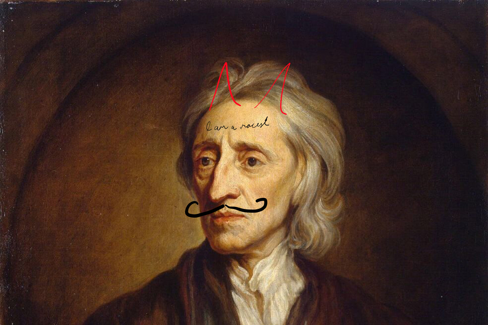
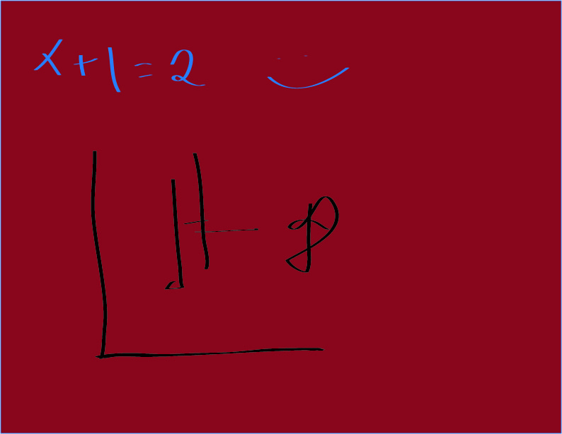

1 / 3

2 / 3

3 / 3

You see, all people are selfish and bad. Taxes literally come from the devil. I know this statement to be a fact because my father always told me so before leaving on his very important business trips with his secretary. Then a professor from business school said it, too. He taught at Harvard, and no one who teaches at Harvard could be wrong, right? Anyway, everyone is terrible. BUT, if everyone decides to be terrible at the same time, then everything will be great!!! What do you mean that doesn't make sense? No, I know it seems crazy. Don't worry, I did the math. Do you see this graph? Yes, the supply and demand graph. See, a firm should sell its products at the price where the supply and demand curves intersect. When you apply this logic to social systems, you'll understand why it's perfectly Rational to let poor people starve. If we help them, then graph will be all wrong, and Daddy will be mad. If we do nothing, then the messiah -- oh my god, sorry I meant the market... then market will save everyone! History doesn't matter at all, nor does politics. Get rid of the government and let the market do the work. Simple, right?